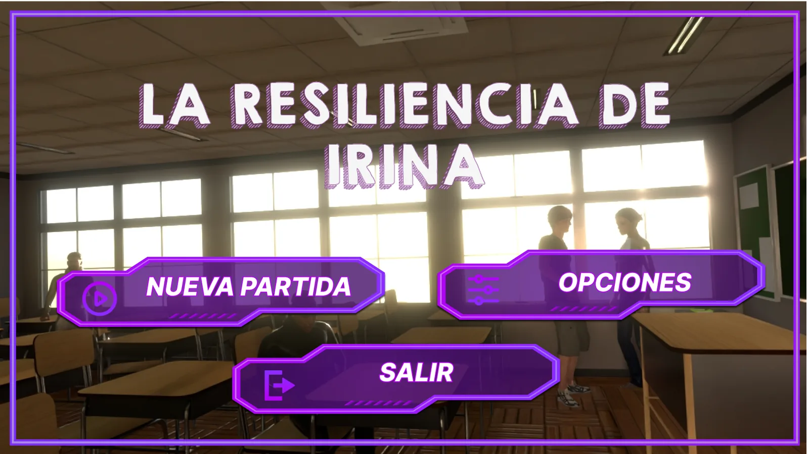

About
Hi, I’m Julieta
Data Analyst and UX/UI Designer with a degree in Multimedia Engineering and a specialisation in Business Intelligence.
I sit between two disciplines. Data analysis tells me what people do in a product; UX research and design tell me why, and what to change.
My Multimedia Engineering degree gave me interaction design, web development and user research. The Business Intelligence specialisation added SQL, data modelling, Power BI, Tableau and Python.
Years in customer-facing roles taught me to listen to users and explain things simply, which is most of the job when you present data.
Experience and education
Open a row to read more.
-
2016 Academic EnglishThe Cambridge English Institute Education
Academic English programme. Today I work in English at C2 level.
-
2018 Sales AdvisorCars Planes Group, Córdoba, Argentina Work
Face-to-face sales and customer advice. My first job working directly with customers.
-
2019–2020 Customer Service RepresentativeSitel, Cali Work
Supported customers of an international company in English and Spanish, and saw first-hand where users get stuck in digital products.
-
2020–2024 Undergraduate degree in Multimedia EngineeringUniversidad Autónoma de Occidente Education
Interaction design, web development, audiovisual production and user research.
-
2022 Content CreatorViveEsports, Cali Work
Planned, designed and edited social media content for an esports community.
-
2024 UX/UI Research and Design certificationsThe Interaction Design Foundation Education
Human-Computer Interaction, Mobile UI/UX Design, and Product Strategy and Adoption.
-
2024–2025 Customer Service RepresentativeTaskUs, Cali Work
Supported users of an international client’s digital product, in English.
-
2025–now Specialisation in Business Intelligence, emphasis on Big DataUniversidad Autónoma de Occidente Education
Data modelling, SQL, ETL, dashboards in Power BI and Tableau, and analysis with Python. In progress.
-
2025–2026 Community ManagerKhryzos & Zephyra, Cali Work
Ran social channels for a local food business and designed its mobile menu.
-
2026 Portuguese, Beginner to AdvancedUdemy Education
Portuguese at B2 level.
-
2026 Member Engagement SpecialistEasyHealth, Cali Work
Communication and engagement with members of a health membership service.
Earlier design work
UX case studies and a design, web and content archive from my Multimedia Engineering years.
-

La resiliencia de IrinaA VR narrative game that puts players in the shoes of Irina, a young woman facing gender-based violence, to build empathy through an experience rather than a lecture. -
 NonaAntojosA mobile web menu for a local catering business, designed so busy customers can find and order what they want in a few taps.
NonaAntojosA mobile web menu for a local catering business, designed so busy customers can find and order what they want in a few taps. -
 Design, web and content archiveWeb design, graphic design, 3D and video from my Multimedia Engineering years.
Design, web and content archiveWeb design, graphic design, 3D and video from my Multimedia Engineering years.
Let’s talk
I’m looking for roles in data analysis, business intelligence and UX/UI design. Email or LinkedIn are the best ways to reach me.